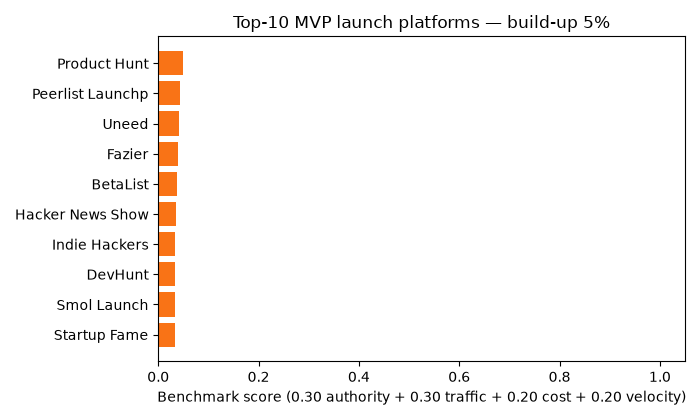
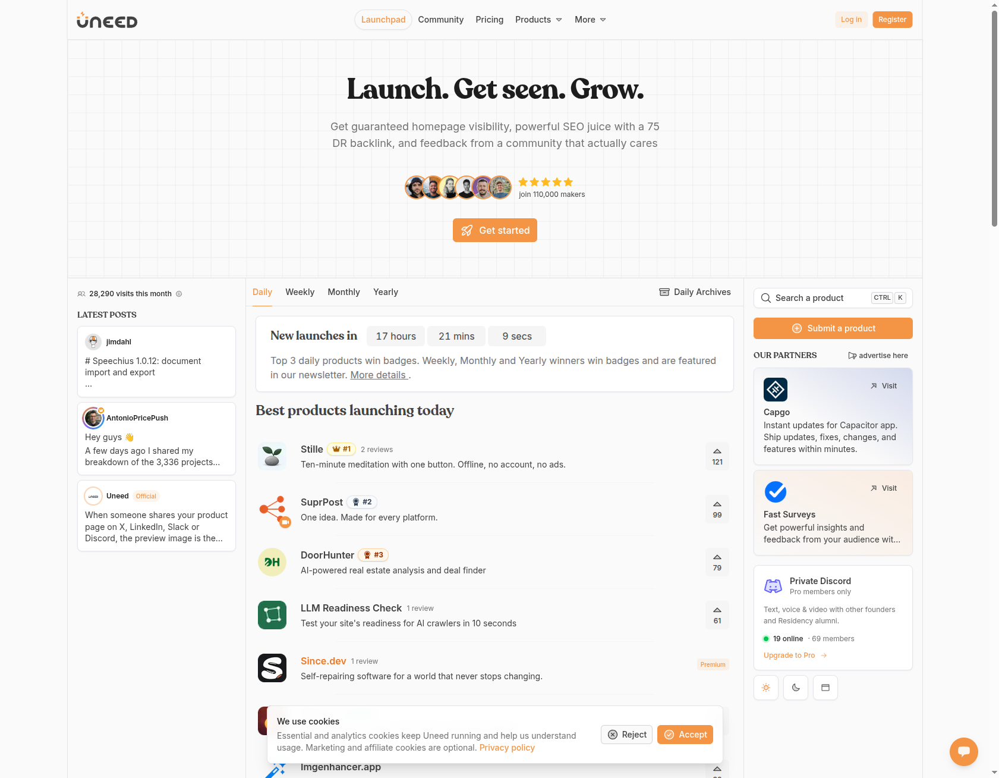
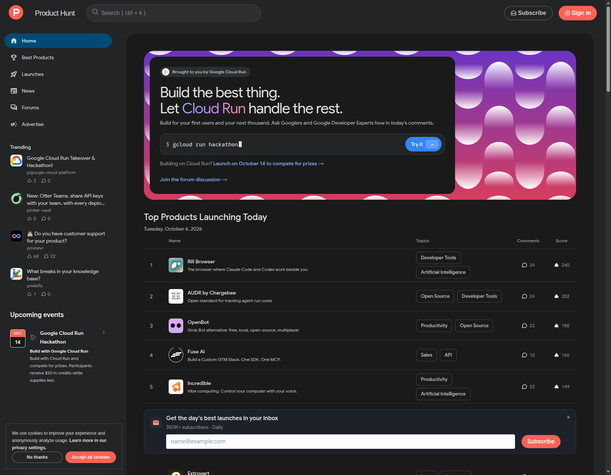
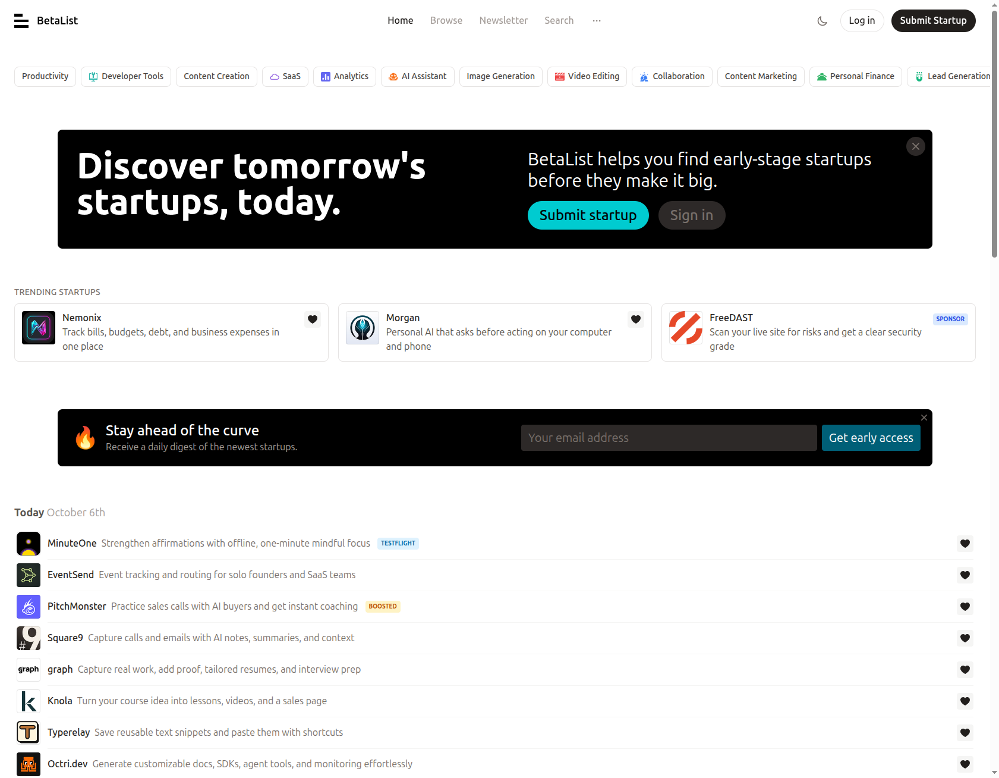
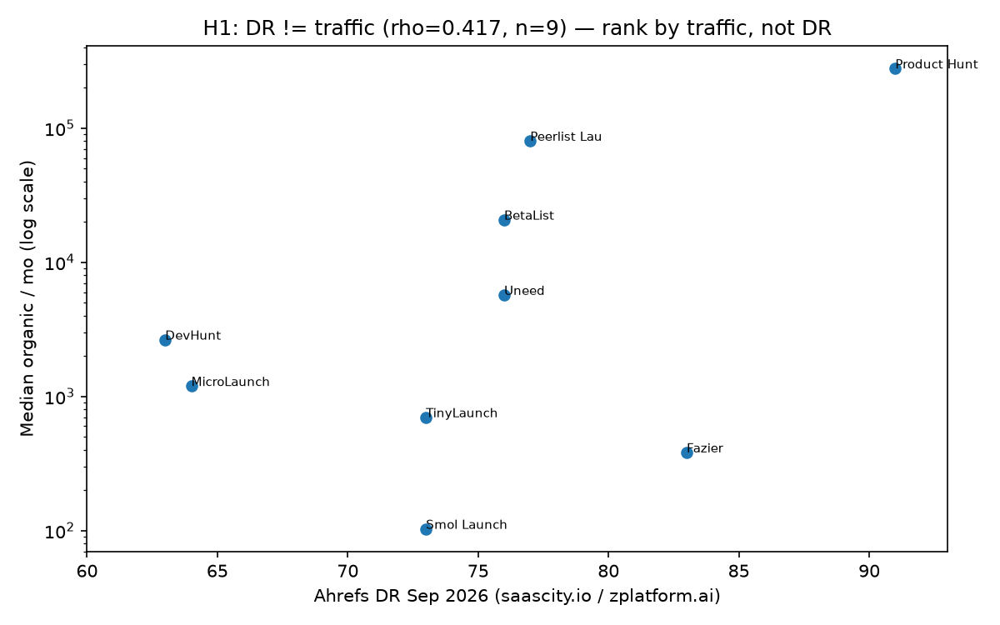

Product Hunt is the biggest one-day stage — and a lottery. This live-verified benchmark maps 25 launch boards, waitlists, dev arenas and permanent directories, ranks them with open code, and turns them into a calm 4–8-week playbook: waitlist → weekly boards → daily boards on different days → one big day → permanent pages. Launch where makers clap, validate where buyers pay.
How to read this: numbers come from data/platforms.csv + 4 runnable experiments. Re-run: docker compose up research. Full paper: PAPER.md · Protocol: METHODOLOGY.md
Top 5 overall: 1 Product Hunt 1.000 · 2 Peerlist Launchpad 0.864 · 3 Uneed 0.837 · 4 Fazier 0.777 · 5 BetaList 0.756 — then Show HN, Indie Hackers, DevHunt, Smol Launch, Startup Fame. Weights: 0.30 popularity + 0.30 traffic + 0.20 cost + 0.20 timing. The ranking is goal-conditional:
| Your goal | Use this shortlist |
|---|---|
| Biggest one-day spike | Product Hunt + Show HN (bring ~50 voters, Tue–Thu, never both same day) |
| Developer tool | Peerlist → Show HN → DevHunt (working demo beats slogans) |
| Before launch (emails) | BetaList + Launching Next + idea-first post |
| Google links that last years | Startup Fame + Fazier + Uneed + SaaSHub/AlternativeTo permanents |
| Calm first launch | Smol Launch / TinyLaunch / MicroLaunch (7–30 day windows) |

Full table: results/benchmark_ranked.csv (25 rows) · overlays: results/02_ranking.json

Stille #1, SuprPost #2, DoorHunter #3 — daily + weekly + monthly tabs, newsletter badges.

Rill Browser #1 (240), AUDR #2 (202) — scores concentrate at the top. That is the lottery.

Today's batch + trending + daily-digest signup. This is where waitlists are built.

Fazier DR83→383/mo vs DevHunt DR63→2,652/mo. File: results/figures/dr_vs_traffic.png
Slideshow: 3 live captures + key chart. Regenerate: python experiments/make_demo_assets.py
Cost: $0 slow path · ~$115 fast path (Uneed $29.99 + Fazier $49 + LaunchIgniter $15 + SaaSCity $19.99 = dates + 4 permanent links). Never pay for votes.
MVP = smallest test of one question. Launch = publish on a scoreboard. Daily = 1 frantic day · Weekly = 7 calm days · Monthly = 30 slow days. Dofollow link = a vote Google counts for years; nofollow = ignored after the buzz. Queue-tax = free costs 30–150 waiting days. Worked example: Sara's habit-tracker — queues today → waitlist week 1 → Peerlist week 2 → Uneed+Fazier week 3 → one big day week 4 → ~16× the visits of a lone Product Hunt shot, then 50–200 buyer beta invites. Full story in README beginner guide.
10 questions, instant feedback, final score + level. Answers come from this page and the study. No data leaves your browser.
Yes — if you bring ~50 voters on a Tue–Thu you choose. It converts an audience you have; it rarely creates one from zero.
BetaList (before) + Peerlist (weekly, forgiving) + Uneed (daily + newsletter + permanent page). Add Product Hunt week 4 with proof.
$0 = join all free queues today (1–5 months). $115 = guaranteed dates + 4 permanent links + weeks of visibility. Neither buys votes.
Peerlist + Show HN + DevHunt same week. Working demo + short README beat slogans.
Founder-board applause converts ~0. Validate with 5 buyer interviews + landing page + 50–200 private beta in the buyers' community.
Push to GitHub → Settings → Pages → Deploy from a branch → main + /(root) → open /preview.html. Local check: python3 -m http.server 8000 → http://localhost:8000/preview.html.
docker compose up research # liveness → scoring → patterns → simulator → tests python experiments/make_demo_assets.py # regenerate GIF + MP4 python -m http.server 8000 # then open /preview.html
Ledger data/platforms.csv · outputs results/ (never hand-edit) · gates tests/test_benchmark.py (6 green) · paper PAPER.md · protocol METHODOLOGY.md · MIT LICENSE